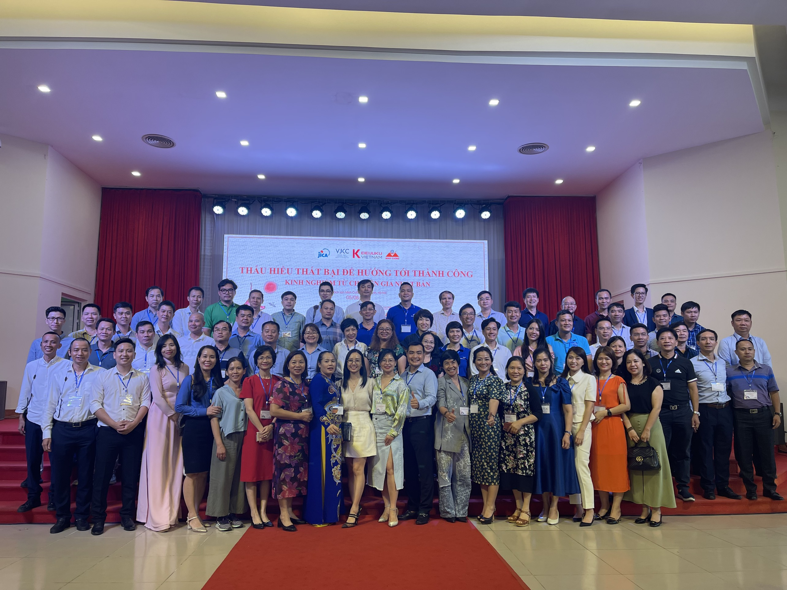

Công ty TNHH An Cao - ACTECH LÀ NHÀ TÀI TRỢ CHÍNH HỘI THẢO “THẤU HIỂU THẤT BẠI ĐỂ HƯỚNG TỚI THÀNH CÔNG”
Sau hơn 2 năm đại dịch, rất nhiều doanh nghiệp đang khó khăn để thích nghi với tình hình mới. Trước thực tiễn này, vào tháng 8/2022, Cộng đồng Keieijuku kết hợp với JICA, Viện VJCC… đã tổ chức hội thảo "Thấu hiểu thất bại để hướng tới thành công” với mục tiêu giúp các thành viên trong cộng đồng Keieijuku chia sẻ kiến thức chuyên môn, kinh nghiệm, kết nối giao thương nội khối, xây dựng hệ sinhsD thái phát triển bền vững. Công ty TNHH An Cao – ACTech doanh nghiệp có nhiều năm hoạt động trong lĩnh vực Công nghệ Quản trị thông minh là nhà tài trợ chính của sự kiện này.

Công ty TNHH An Cao - ACTech - Nhà tài trợ chính cho hội thảo “THẤU HIỂU THẤT BẠI ĐỂ HƯỚNG TỚI THÀNH CÔNG”
Tại Hội thảo, Mr. Hiroaki Yashiro - chuyên gia Jica đến từ Nhật Bản đã chỉ ra triết lý chung của những doanh nghiệp tồn tại và phát triển trên 100 năm. Đó là: Thử sức ở những lĩnh vực, cơ chế mới; Coi trọng cán bộ nhân viên trong doanh nghiệp và tích cực cống hiến cho xã hội. Theo ông, điều kiện chính để làm nên thành công trong kinh doanh của doanh nghiệp là an toàn và sức khỏe của toàn thể cán bộ, công nhân viên của doanh nghiệp đó. Với chủ đề chia sẻ từ chuyên gia Nhật Bản với các bài học thất bại – thành công trong sự nghiệp kinh doanh, sự kiện là cơ hội để cộng đồng doanh nghiệp Keieijuku mở rộng kết nối, nâng cao hình ảnh và lan tỏa tinh thần kinh doanh sau đại dịch Covid-19. Từ đó sẵn sàng đón nhận làn sóng chuyển dịch đầu tư nước ngoài, đặc biệt từ Nhật vào Việt Nam.
Các học viên của Khóa Keieijuku
Tại đây, gian hàng giới thiệu các nền tảng ứng dụng Công nghệ quản trị thông minh vào Quản trị hệ thống Doanh nghiệp ACTechSMT như : CRM, AFM, HRM, OFFICE, MRP, SSM, DAS, MBO, DMS+, ASM, PURCHASE... cũng đã nhận được sự quan tâm của đông đảo đối tác và khách hàng.


Các doanh nghiệp được tư vấn về các giải pháp quản trị của ACTech